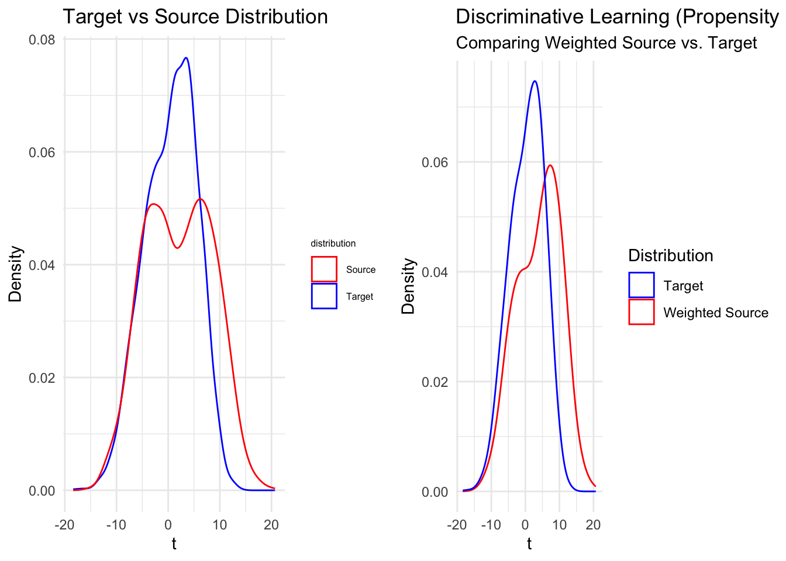

Suppose the data we observe is from a mixture model \(\pi_{0} \mathbb{P}^{(0)}_{X, Y} + \pi_{1} \mathbb{P}^{(1)}_{X, Y}\), with \(\pi_{k} = \mathbb{P}(Z=k)\) and \(Z \in \{0,1\}\) as a latent label of each observation.
By Bayes Rule:
\(\frac{d\mathbb{P}^{(0)}_{X}}{d\mathbb{P}^{(1)}_{X}}(x) = \frac{\pi^{*}_{1}}{\pi^{*}_{0}} \frac{d\mathbb{P}^{(0)}_{Z,X}}{d\mathbb{P}^{(1)}_{Z,X}}(x) = \frac{\pi^{*}_{1}}{\pi^{*}_{0}}\frac{\mathbb{P}(Z=0|X=x)}{\mathbb{P}(Z=1|X=x)}\)
With iid data, we can can approximate \(\pi^{*}_{k}\) with \(\hat{w_k} = \frac{n_k}{n_0 + n_1}, k=0,1\)
Estimator:
Step 1: Learn the propensity score \(\mathbb{P}(Z=k|X=x)\) by your favorite model \(\Rightarrow \hat{\mathbb{P}}(Z=k|X=x)\)
Step 2: Use the weight \(\hat{w} = \frac{\hat{\pi}_{1}}{\hat{\pi}_{0}}\frac{\hat{\mathbb{P}}(Z=0|X=x)}{\hat{\mathbb{P}}(Z=1|X=x)}\) to reweight the source data then solve the ERM problem
# 1) Generate multi-Gaussian "toy" data
set.seed(123) # For reproducibility
# Dimension
D <- 20
v <- seq_len(D) # e.g. (1,2,...,20)
# Number of samples
n_source <- 3000
n_target <- 3000
# Mixture-of-2-Gaussians generator (1D t)
mix_2_gaussian <- function(n, means, sds) {
# randomly pick which component each point is from
comps <- sample.int(2, size = n, replace = TRUE, prob = c(0.5, 0.5))
rnorm(n, mean = means[comps], sd = sds[comps])
}
# Source distribution: bigger variance
source_t <- mix_2_gaussian(n_source, c(-3, 7), c(4, 4))
# Target distribution: smaller variance
target_t <- mix_2_gaussian(n_target, c(-3, 4), c(4, 3))
# Convert scalar t -> D-dim data: X = t * v
X_source <- outer(source_t, v) # shape: n_source x D
X_target <- outer(target_t, v) # shape: n_target x D
# We'll keep track of 't' for plotting, but our classifier uses all D features.
# 2) Build a combined dataset for classification
# label Z=0 => source, Z=1 => target
df_source <- data.frame(X_source)
df_source$Z <- 0
df_source$tval <- source_t # for easy plotting later
df_target <- data.frame(X_target)
df_target$Z <- 1
df_target$tval <- target_t
df_combined <- rbind(df_source, df_target)
# df_combined is now (n_source + n_target) rows, each row has D=20 features + Z label + tval
# Shuffle rows (optional) to avoid any ordering artifacts
df_combined <- df_combined[sample(nrow(df_combined)), ]
# 3) Estimate mixing proportions pi_0, pi_1
n_total <- n_source + n_target
hat_pi0 <- n_source / n_total
hat_pi1 <- n_target / n_total
# Typically, pi_0 + pi_1 = 1.
# 4) Step 1: Learn the propensity P(Z=1 | X=x)
# We'll do a logistic regression:
# Z ~ X1 + X2 + ... + X20
# We'll name the feature columns conveniently for the formula
feature_names <- paste0("X", seq_len(D))
names(df_combined)[1:D] <- feature_names
# Fit logistic regression
model_prop <- glm(
formula = as.formula(paste("Z ~", paste(feature_names, collapse = "+"))),
data = df_combined,
family = binomial(link = "logit")
)
p_hat_all <- predict(model_prop, newdata = df_combined, type = "response")
# So p_hat_all[i] = estimated probability that row i is from target
df_combined$Z_pred <- ifelse(p_hat_all > 0.5, 1, 0)
# 5) Step 2: define weights for *source* samples only
# w(x) = (hat_pi1 / hat_pi0) * [p(Z=0|x)/p(Z=1|x)] = (hat_pi1 / hat_pi0) * [(1-p)/(p)]
# We'll store weights in a vector w_opt for source rows, zero for target
w_opt <- numeric(n_total)
for (i in seq_len(n_total)) {
if (df_combined$Z[i] == 0) {
# Source sample
p1 <- p_hat_all[i] # p(Z=1|X)
p0 <- 1 - p1 # p(Z=0|X)
w_opt[i] <- (hat_pi1 / hat_pi0) * (p0 / p1)
} else {
# Target sample => no reweighting needed => w=NA or 0
w_opt[i] <- 0
}
}
df_combined$weight <- w_opt
# 6) Extract the "weighted source" subset for plotting
# Because df_combined is shuffled, let's re-split
df_source_new <- subset(df_combined, Z == 0)
df_target_new <- subset(df_combined, Z == 1)
# Weighted source => use df_source_new$tval as x, weight = df_source_new$weight
# Target => no weighting needed, just df_target_new$tval
# 7) Plot the distribution of (t) for Weighted Source vs. Target
source_target <- ggplot() +
geom_density(data = df_target, aes(x = tval, color = "Target")) +
geom_density(data = df_source, aes(x = tval, color = "Source")) +
scale_color_manual(
name = "distribution", # this is the legend title
values = c("Target" = "blue",
"Source" = "red")
) +
labs(x = "t", y = "Density", title = "Target vs Source Distribution") +
theme_minimal() +
theme(
legend.title = element_text(size = 6), # Smaller legend title
legend.text = element_text(size = 6) # Smaller legend text
)
estimation_true <- ggplot() +
geom_density(
data = df_source_new,
aes(x = tval, weight = weight, color = "Weighted Source"),
adjust = 1.5
) +
geom_density(
data = df_target_new,
aes(x = tval, color = "Target"),
adjust = 1.5
) +
scale_color_manual(
name = "Distribution",
values = c("Weighted Source" = "red", "Target" = "blue")
) +
labs(
x = "t",
y = "Density",
title = "Discriminative Learning (Propensity Score) Reweighting",
subtitle = "Comparing Weighted Source vs. Target"
) +
theme_minimal()
grid.arrange(source_target, estimation_true, ncol = 2)
From the density plot, we can observe that the weighted source distribution aligns in shape with the target distribution, which can be consider as a successful reweighting outcome
While our simple 1D toy example is convenient for illustration, its relative simplicity may fail to capture the nuanced performance gains that the complex discriminative learning method can achieve in higher-dimensional or less trivial domain-shift scenarios.